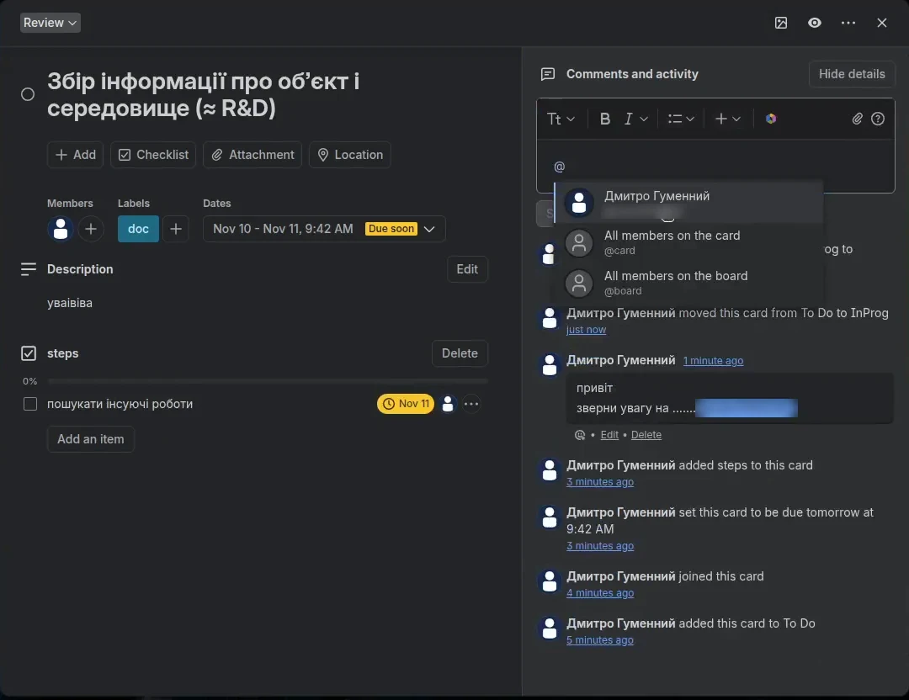
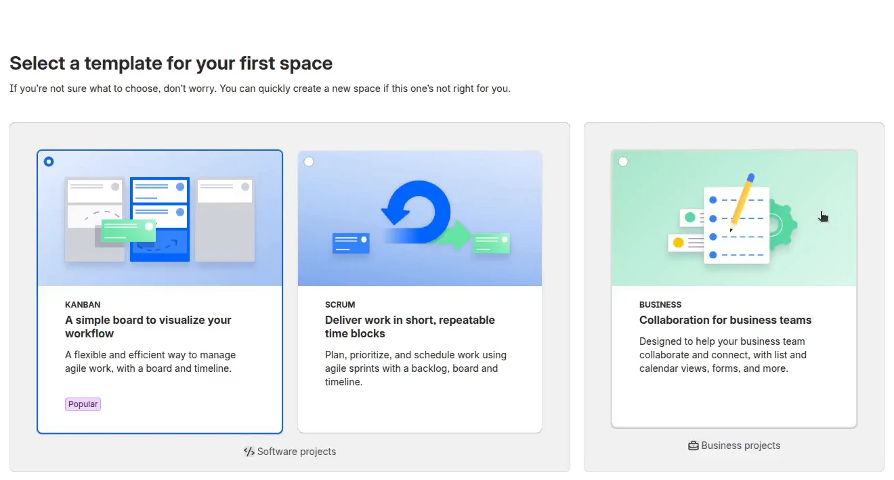

Teaching / Session 15 · 10 Nov 2026
From a Kanban Board to Trello and Jira: Task States, Kanban and Scrum
Where To Do, In Progress, Hold, Review and Done come from, why plan offline, how Trello differs from Jira, and when to choose Kanban or iterations.
10.11.2026Session 15 / 1601:10:59Lecture
Course chronology
Engineering notes
Where To Do, In Progress, Hold, Review and Done come from, why plan offline, how Trello differs from Jira, and when to choose Kanban or iterations.
Offline planning and SAFe
Trello versus Jira
Kanban or Scrum
Full session notes
Full session notes
Complete English teaching notes derived from the Ukrainian transcript of 10 November. Diagrams are editorial, based on the lecturer’s explanations; experience at automotive companies is the lecturer’s own practice, without company names.
Session 15. From a physical kanban board to Trello and Jira: task states, Kanban and Scrum
10 November 2026 · lecture · 1 h 11 min. Prepared from the automatic transcript and the video recording
IgorSikorskyKPI_L10_101126.mp4: what the lecturer showed on screen or drew on the board without saying it aloud has been added from the video. These are edited teaching notes, not a verbatim record: obvious recognition errors are corrected and terms are aligned with earlier sessions. Individual student questions about grades and the names of students and third parties are not published. Experience at large automotive companies is the lecturer’s own practice, given without company names. Editorial clarifications and editorial diagrams are marked separately.
0. Organisational
- The first minutes went to an individual question about points in the university’s “Campus” system. The lecturer promised to find out through the system administrators why the record changed and remarked that such systems lack a transparent change history — “like looking in Git at who made the commit”. Details are not published.
- The lecturer then briefly walked through the published notes of session 14 on the course site: phases and gates, HARA, PoC, build levels and the detailed EPIC 1 plan — the source of the tasks for today’s board.
- Safety reminder during an air-raid alert: “engineering works when the engineer is alive”.
- The second assessment is a team project (see section 6). Recommended deadline: end of November.
- After the second assessment there will be a large individual design assignment worth about 60 points: going through the whole path again — preparing for a conference, attending it, a simulated customer meeting, a presentation, follow-up, proposal and team decomposition. It also lets students make up for missed sessions.
- This course covers the management of the life cycle. The lecturer would like to give the engineering part — hardware and software development, integration, validation and verification, deployment and project closure — as a separate continuation, if he continues teaching at KPI.
1. Where the kanban board comes from
The logic of Jira, Trello, GitHub Projects or any kanban board comes from the factory floor. Management needed to see the real progress of every task, not just that “something is being done”.
The lecturer’s example: a turner named Ivan has to turn 10 parts. He needs drawings and equipment, then does the work and hands it to an engineer for checking. If everything is fine, the work is done; if not, it goes back for rework. Blanks may run out, and the work has to be paused.
So factories drew a board with columns, and each task was written on its own sheet:
The lecturer drew this board live with markers on the whiteboard in his office and showed it through the camera: status columns and pink sticky notes that he moved between columns while telling the Ivan example.
| State | Meaning |
|---|---|
| To Do | The task is open and waiting to be picked up |
| In Progress | Someone is working on it (even if the people working on it change) |
| Hold | Work has stopped: something is missing, the task is blocked |
| Review | The work is done and being checked |
| Done | The check has passed, the task is finished |

How a task moves
- The task “Turn a shaft” goes to To Do and is assigned to Ivan. He is asked how long it will take; Ivan says “4 hours” — the original estimate.
- More and more tasks land on Ivan, others on Maksym. But one person does one job at a time, so priorities are needed: highest, medium, low. Ivan takes the highest one and moves it to In Progress. If the top-priority task is not picked up, the assignee will be asked why.
- Blanks run out — the task goes to Hold.
- Non-mechanical processing is needed — Ivan reassigns the task to Kolya, who does his part and assigns it back. The task stays In Progress all along; different people simply work on it.
- Finished work goes to Review. From there it can go back “for rework” (to In Progress), to Hold (“we are not ready”) or back to To Do (“no longer relevant”). The best outcome is Done.
The point is very simple management and traceability: you can see where each instruction is moving, who holds it and what it is blocked by.
2. The physical board today: brainstorming and offline planning
The lecturer showed photos of his working boards from the not-so-distant past at large automotive companies in Scandinavia (names not given). There the kanban was laid out in sticky notes, colours marked teams and risks, and tasks were distributed across teams. The neighbouring boards held brainstorming: a sketch of a car, differential equations, forces, moments, graphs.
How such a sprint board was organised (from the photo shown in the session; the photo itself is not published because it is the customer’s working material):
| Element | What it holds |
|---|---|
| Left column | The team’s backlog |
| Sprint columns | Two-week sprints labelled by calendar weeks (W11–12, W13–14 …) |
| Header of each sprint | Team capacity in points, the capacity of a sub-team, and the planned load |
| Sticky notes | Colours for types of work; each note carries a short title and a point estimate |
| Dashed line | Separates what is planned from what may not fit |
| Side field | The requirements and verification work products: SRS, traceability, software test plan and test report |
This is the same capacity-and-load logic that session 16 works through.
According to the lecturer, meeting in person for planning has become the norm again:
- online engineering is clearly inferior to offline engineering in quality and speed — “engineering happens in the kitchen, when engineers drink coffee together”;
- people need to see each other, shake hands and “physically talk through” the next iteration or increment;
- after planning together, remote communication becomes easier.
He referred to the Scaled Agile Framework (SAFe): once a quarter teams meet in person, plan the scope of work, analyse risks, break large items into stories, tasks and subtasks, assign people and estimate — and only then return to their offices and companies in other countries. In the session the lecturer opened the interactive SAFe map (Big Picture, Core SAFe configuration) and showed that every element links to its own article — for example, on the Business Owners role.
Editorial clarification on SAFe. In SAFe this event is called PI Planning: usually a two-day planning session for the whole Agile Release Train, held every 8–12 weeks at the start of each Planning Interval (PI). Physical presence is preferred, but SAFe also allows a distributed format; what matters is that the people who do the work plan the work. The rhythm is therefore tied to the PI rather than to an epic: in SAFe an epic is a large initiative that may span several PIs.
The lecturer’s personal experience: all his large projects — including those with large customers today — started offline, with a handshake: meeting at a conference, quick planning, lunch at the customer’s office. For people who studied during COVID and the war, offline may feel uncomfortable, but for European business it works better.
So why Jira
A physical board has limits:
- sticky notes fall off, get lost and wear out from corrections;
- dependencies between tasks have to be shown literally with threads and tape;
- it is hard to attach an artefact to a sticky note — for example, a photo of an enclosure that has to be manufactured;
- once epics are broken into stories, the board turns into “solid wallpaper of notes” and navigation becomes awful.
So the physical board is used for the first, high-level stage, while the daily routine and current status live in Jira, Trello or GitHub Projects. This combines the strengths of both.
For those who see themselves in management, the lecturer recommended two free sources: the SAFe website (explore its interactive map “in great detail”) and the Project Management Institute (PMI), the international organisation that standardises project management processes. A detailed treatment of Kanban, Scrum and SAFe belongs to separate courses. “I would like each of you, some time from now, to be giving out work rather than doing it.”
3. Trello: a minimal board in minutes
Trello belongs to Atlassian, the same vendor as Jira. It is a tool for small projects that need simple, free task tracking.
Editorial clarification. Atlassian announced the acquisition of Trello on 9 January 2017 and completed it on 3 February 2017.
In the session the lecturer created an account and a new board with the lists To Do, In Progress, Hold, Review, Done — “a very simple, canonical board” — and a first card, “Collect information about the robot” (continuing the example from session 14). What a card can carry:
| Card element | Purpose |
|---|---|
| Members (assignee) | Who is responsible for the task |
| Labels | A quick visual category, e.g. Documentation |
| Dates | Start and end — a timeline, as in the epic plan from session 14 |
| Checklist | Intermediate steps, e.g. “Look for existing robot manipulators”; an item can be assigned to another person with its own deadline or turned into a separate task |
| Comments | Discussion with @mentions of colleagues — something almost impossible on a physical board |
The lecturer found no priority field on the card and suggested a workaround: move higher-priority tasks up the list.
The demo board demoBoard had the lists To Do, InProg, Hold, Review, done; the cards were the first stages of the EPIC 1 plan from session 14 — “Collecting information about the object and its environment (≈ R&D)”, “Developing and approving system requirements”, “System architecture description”. On the first card the lecturer assigned himself, added the label doc, dates 10–11 November, a checklist steps with the item “look for existing work” (with its own due date and assignee) and a comment with an @-mention of a board member.


Editorial clarification. The screenshot shows that Trello does keep a card activity log: creation, a member joining, a due-date change and every move between lists (“moved this card from To Do to InProg”). What Trello lacks is rules that forbid transitions: the log only records who did what. A new account also gets a Trello Premium trial (“14 days left” on screen), so some features in the demo are available only temporarily.
Editorial clarification. Trello indeed has no built-in priority field. Priority is expressed with labels, card order in the list, or a custom field (available on paid plans or through Power-Ups).
Cards move by drag and drop: picked up → In Progress, finished → Review with a comment “please review”, and the reviewer moves it to Done or back to In Progress with remarks. Notifications arrive by e-mail and in the mobile app.
Trello’s strengths: set up in minutes, all the minimum tools you need, a mobile app.
Weaknesses: no transition rules — any card can simply be dragged to Done; change history is hard to follow. The lecturer called Trello “a kind of kindergarten” among such tools.
The lecturer’s practice: Trello for non-engineering roles
The lecturer uses Trello for separate non-engineering domains. For example, he has an accountant, and a separate board holds tasks such as “pay for the screw order” or “arrange delivery to Ukraine and customs clearance of the enclosures”. With engineers he works in Jira. He keeps these worlds isolated: the finance department has no access to the engineering one, because otherwise “a mess begins”.
A student objected that Jira has separate spaces for this. The lecturer’s answer: Trello is simple, and that matters when you deal with people who are not engineers. He works extensively with freelancers — engineers, lawyers, finance specialists. Someone who is uncomfortable in Jira spends a lot of paid time there. The aim is a process that is transparent to the person commissioning the work and costs the contractor as little time and money as possible.
4. Jira: when there are many teams and departments
Trello is convenient at a basic level but not flexible enough for large projects with many teams or even departments. Jira is the “grown-up version”. Its strengths:
- support for branched teams and many departments;
- linking with Git (GitHub, GitLab): mention a commit in Jira and jump to Git; mention a Jira ticket in a commit and jump to Jira;
- automation and filters;
- workflow — rules for how a task may change state. Trello has no such rules, “and that is a nightmare — it should not be like that”.
In the session the lecturer created a Jira site for a demo project. Already at creation, Jira asks you to choose an approach: Kanban, Scrum or a business-team template. This is the screen:


So first you need to understand the difference. Configuring Jira was moved to the next session.
Editorial clarification. Since September 2025 Jira Cloud calls “projects” “spaces”. Only the name changed; workflows, filters and integrations work as before.
5. Kanban or Scrum: the mouse example
Most students had worked with Scrum, none with Kanban. The lecturer explained the difference with an everyday example.
Kanban — technical support. An engineer needs a new mouse. The ticket lands in the IT department:
- An IT specialist takes the ticket and reassigns it to the warehouse manager: “check whether we have a mouse”.
- The mouse goes from the warehouse to IT; IT reassigns the task to the office administrator: “take it to the post office and send it”.
- The task stays with the office administrator until the recipient has the mouse.
- The engineer confirms receipt, the office administrator returns the task to IT, and IT records the replacement in the equipment register (to prevent abuse).
- The engineer moves the task to review and confirms that the mouse works; IT closes the task — Done.
One iteration, no attempts: “took it and solved it”.
The same IT department under Scrum (as a joke). Iteration 1: “first I’ll send you a battery — maybe the mouse will work”. It doesn’t — the battery comes back. Iteration 2: “maybe the radio module is broken — let’s send a radio module”. And so on: after many months either the mouse is reassembled or a new one is sent after all. For technical support Kanban is far more realistic.
Developing a product is a different story. Any hardware engineer will tell you electronics cannot be done in one iteration:
| Iteration | What happens |
|---|---|
| 1 | Schematic, PCB layout, component purchasing, manufacturing. It doesn’t work; traces are cut, parts re-soldered, and the board starts “limping along” |
| 2 | Schematic and layout corrected using that experience — it more or less works |
| 3 | Components are too expensive — we are losing to the competition; cheaper equivalents are found without changing the schematic |
| 4 | The enclosure gets shocks — discharge protection (diodes, bridges) is added. Finally everything is fine |
Software is very similar: the first iteration runs “on crutches”, then comes optimisation, then integration and end-to-end tests, each of which brings new surprises and fixes. The lecturer’s conclusion: an iterative approach (Scrum) is natural for computer-systems engineering — hardware, software and systems engineering; Kanban suits tasks such as technical support.
Editorial clarification. The canonical definitions draw the line differently. The Kanban Guide (Vacanti, Coleman) describes Kanban as a strategy for optimising the flow of value: a Definition of Workflow, explicit control of work in progress (WIP limits) and flow metrics. It neither requires nor forbids iterations, and Kanban practices are widely used by development teams too. The Scrum Guide describes Sprints of up to one month, events and artefacts. The lecturer’s example is a practical heuristic: a flow of similar, independent requests fits Kanban well, while development under high uncertainty fits iterations.
6. Second assessment: what to hand in
Each of the four teams prepares one project for a product of its choice:
| Deliverable | Content |
|---|---|
| Architecture | Architecture description of the chosen product |
| Proposal | Summary, architecture description, design description |
| Plan | Project feasibility timeline — a Gantt chart |
| Resources and costs | Engineer involvement chart, costs |
| Engagement models | For each phase, a justified choice: Fixed Price, Time & Material or a combination (why exactly that for R&D, the MVP and so on) |
| Tracker space | Jira (recommended), Trello or GitHub Projects |
| Work structure | Epics, stories, tasks, subtasks |
| Scrum backlog | At least 4 two-week sprints |
| Team | Team members added to the space; preliminary ticket assignment and a preliminary estimate of every task |
The Jira / Trello / GitHub Projects part had not yet been covered — this session started it and the next one continued.
Practical takeaways
- A kanban board is a digital copy of the factory board: To Do, In Progress, Hold, Review, Done.
- One person does one task at a time, so priorities are essential.
- Reassigning does not change the state: a task stays in progress while someone works on it.
- A physical board is still best for the first joint planning; the daily status lives in a tracker.
- Trello is quick and simple but has no transition rules; it suits non-engineering roles.
- Jira is for many teams, Git integration, automation and a controlled workflow.
- Kanban works well for a flow of independent requests; product development under uncertainty is iterative.
Self-check questions
- What are the five states of the canonical board and what does each mean?
- Why does a board not work without priorities when there are few people?
- How does reassigning a task differ from changing its state?
- Why plan offline if Jira exists?
- What is PI Planning in SAFe and how often is it held?
- Which limitations of a physical board does a digital tracker compensate for?
- Why is the lack of transition rules in Trello dangerous?
- How can you express a card’s priority in Trello if there is no such field?
- Why does replacing a mouse fit Kanban, while developing a PCB needs iterations?
- What must the team project for the second assessment contain?
What comes next
The lecturer announced that configuring Jira would continue the next day. That continuation is published as session 16.
Verified links
- SAFe, PI Planning: https://framework.scaledagile.com/pi-planning/
- Project Management Institute: https://www.pmi.org/
- Atlassian — announcement of the Trello acquisition (SEC, 2017): https://www.sec.gov/Archives/edgar/data/0001650372/000165037217000002/a992atlassianpressrelease1.htm
- Atlassian Community — Jira “projects” become “spaces”: https://community.atlassian.com/forums/Jira-articles/Evolving-Jira-terminology-Projects-will-soon-be-Spaces/ba-p/3034977
- Trello — priority via a custom field or Power-Up (Atlassian Community): https://community.atlassian.com/t5/Trello-questions/Trello-Card-Priority/qaq-p/1790778
- The Kanban Guide: https://kanbanguides.org/english/
- The Scrum Guide (2020): https://scrumguides.org/scrum-guide.html